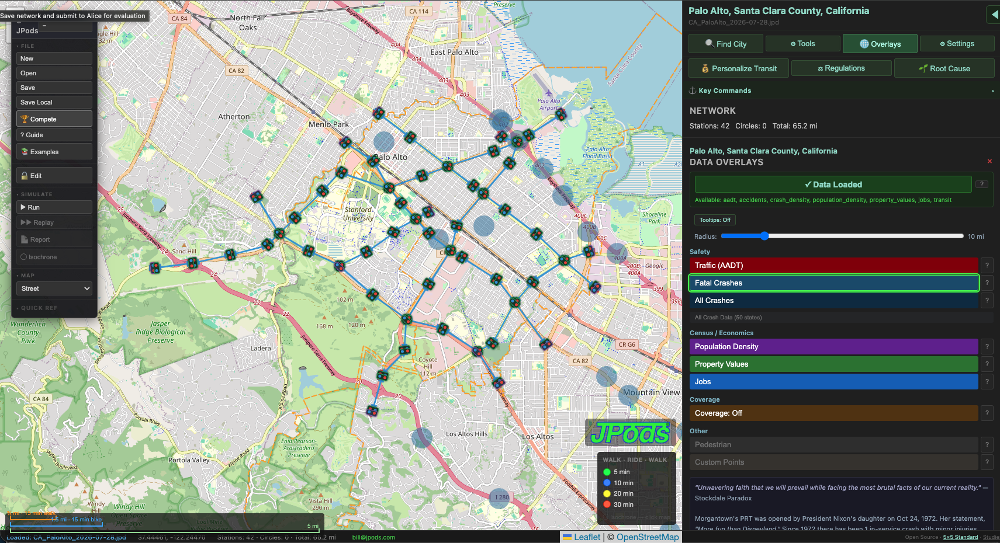
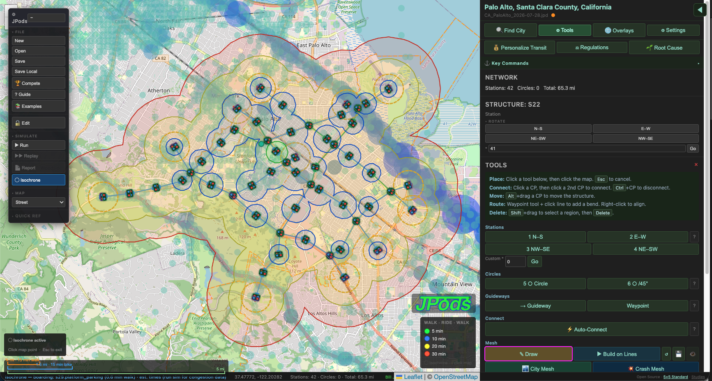
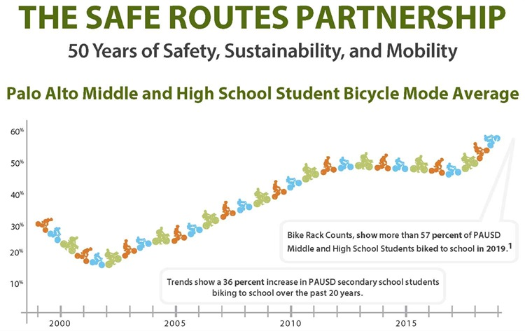
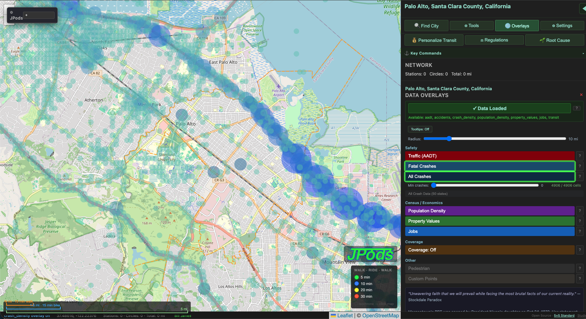

Roadkill Locations
Where people are being killed and injured on roads in Palo Alto, Santa Clara County. Data from NHTSA FARS via MeshMobility.com.

Safe Routes to School proved the principle. JPods scales it to the whole city.
Where people are being killed and injured on roads in Palo Alto, Santa Clara County. Data from NHTSA FARS via MeshMobility.com.
A JPods network designed to cut roadkills 60-80%. Crash corridors become guideway corridors.

Walk-ride-walk travel times from the city center on a PRT network. Without a car, without crashes, available 24x7, powered by sunshine. Green = 5 min, Blue = 10 min, Yellow = 20 min, Red = 30 min.



Palo Alto's Safe Routes to School already gets 57% of students biking. But safety stops at the city line. JPods extends safe routes to the entire region. Make Silicon Valley the first in America to match what the Dutch achieved.